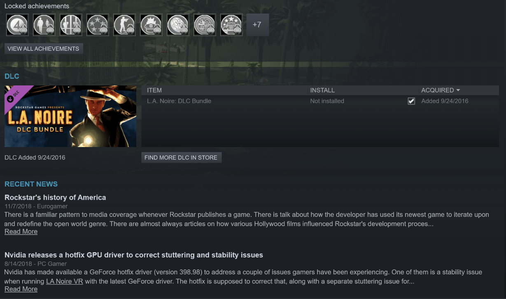

DLC cases are also another variation that can be implemented into the main categories, where you add the extra cases in to get the full story experience within the run.
However, the Complete Edition and the Remastered Edition of the game has this downloadable content already added to the game. So, you may think, how do I speedrun the game without DLC? Unfortunately for console runners, I don’t have the answer, but I do have the answer for PC runners.
When you buy L.A. Noire: The Complete Edition through Steam, and you look at the game in your library (this also goes for any game for that matter), there’s a checklist of DLC content that you either have installed or not. In that list you will see that DLC bundle will be listed and checked off.
By unchecking that checkbox, the DLC will be removed and the game can be played normally as if it never had DLC installed. DLC can just be an extra challenge for anyone that wants to run the complete story.
The list of DLC cases is within the navigation as with all the other categories and cases. DLC case guides will be added throughout the regular Any%, 5 Star%, and 100% as separate options for those that want to look at it.